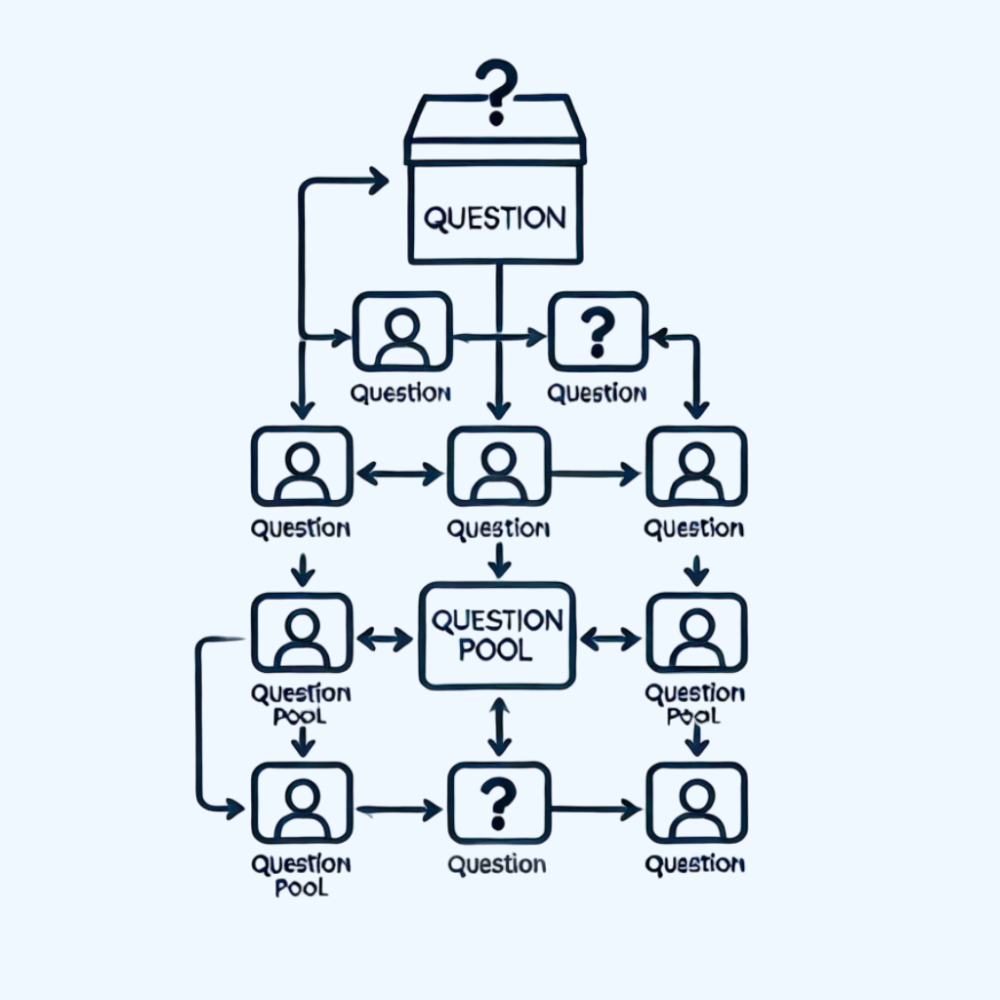
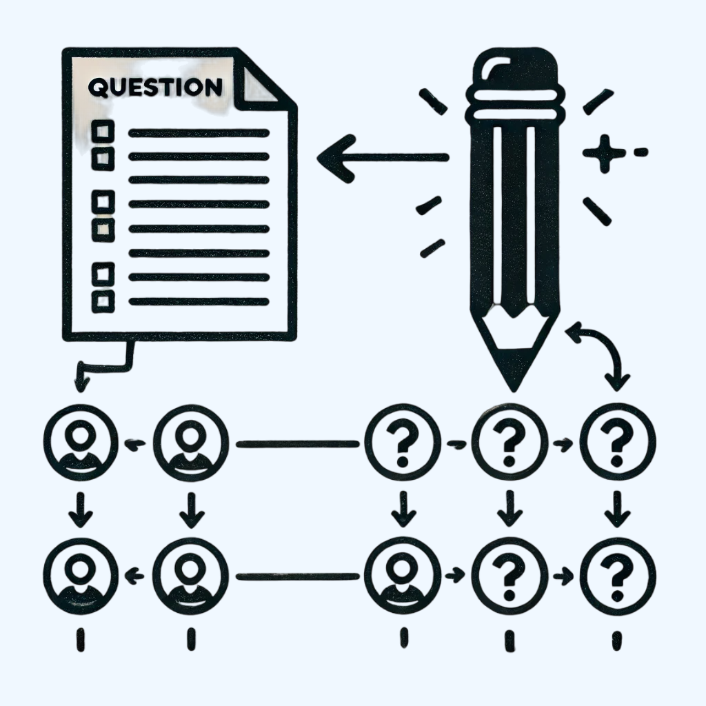
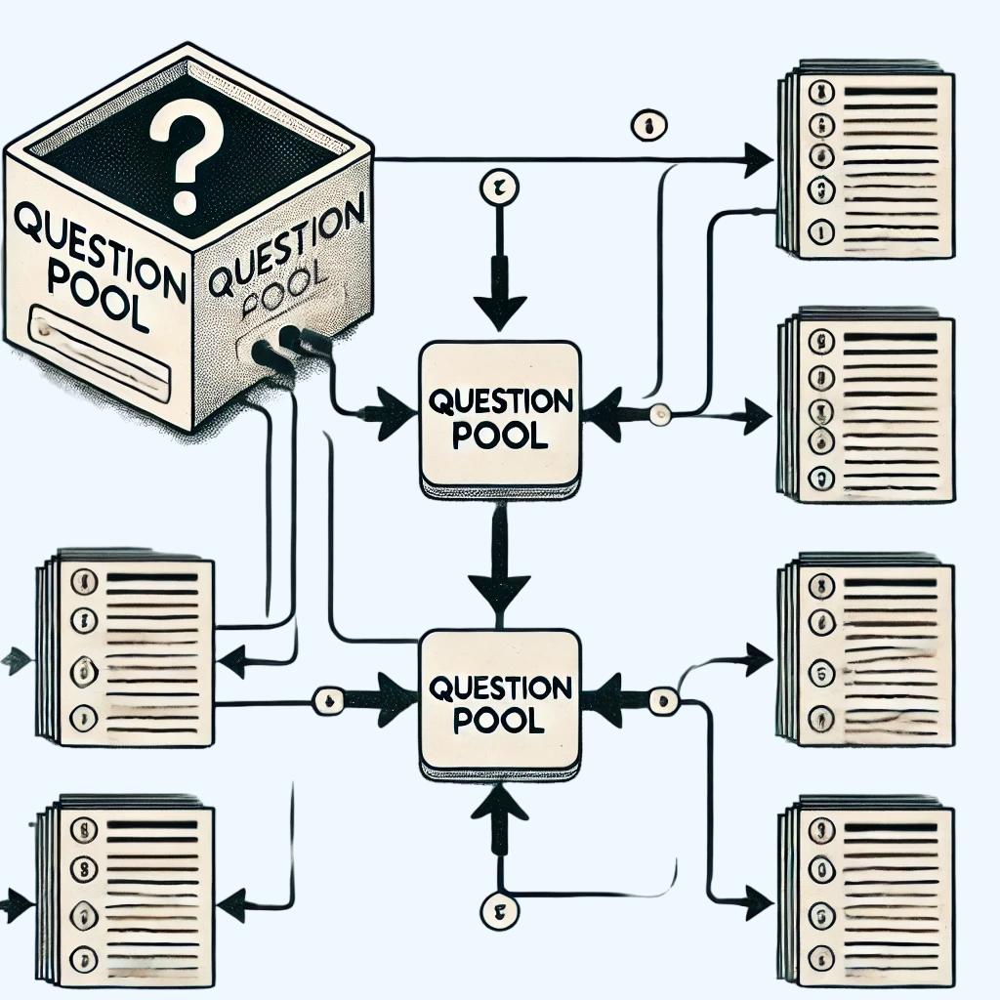

Übungskasten
Ein Ort des Treffens von Lehrern auf sinnvollen LZK-Fragen

Finde die passenden Fragen für deine Schüler und erstelle deine eigene Übungskasten.
Es ist ein Nehmen und Geben. Teile deine LZK-Fragen mit anderen Lehrern und profitiere von deren
Erfahrungen.


Konzentriere dich auf das Wesentliche, und wir übernehmen das Mühsame:
Wir erstellen kreative Arbeitsblätter für den Unterricht
– zielgerecht und zeitsparend.